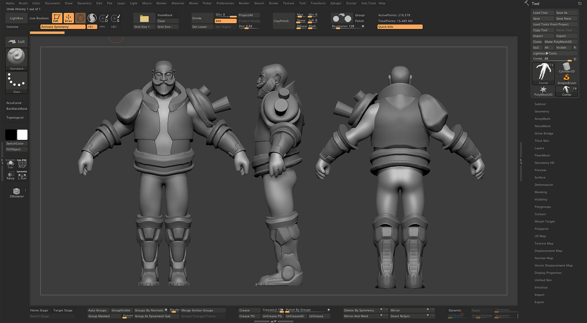
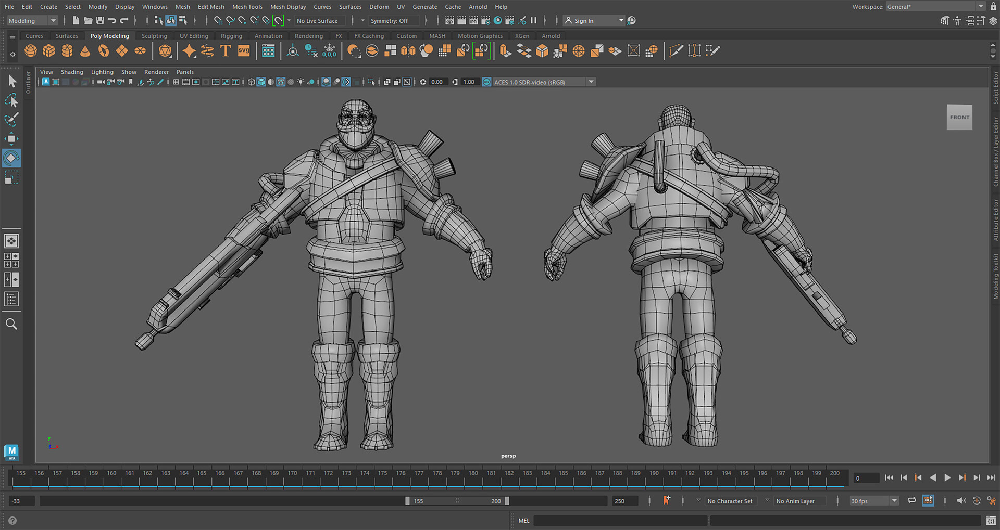
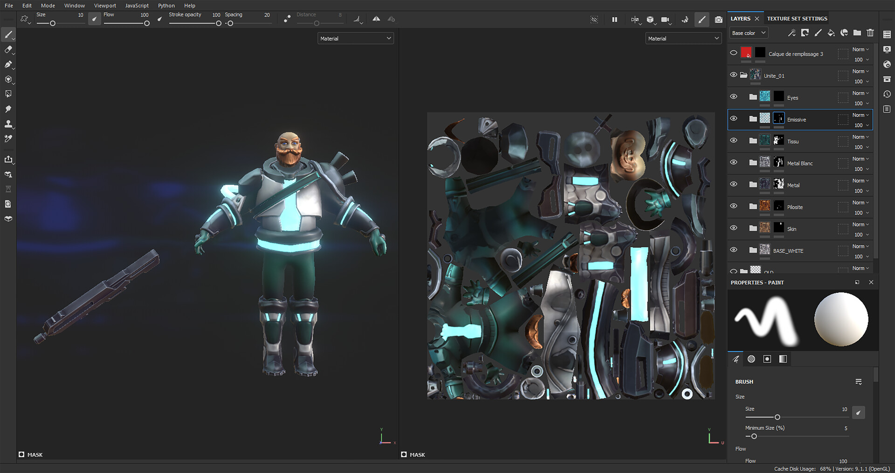
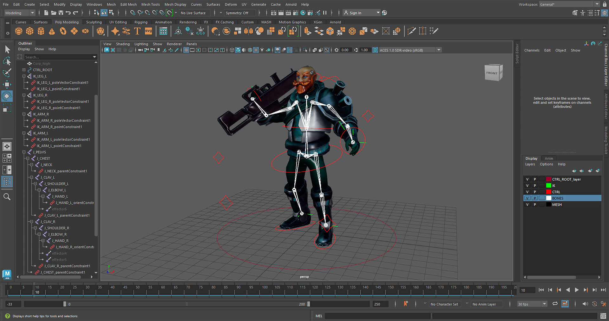
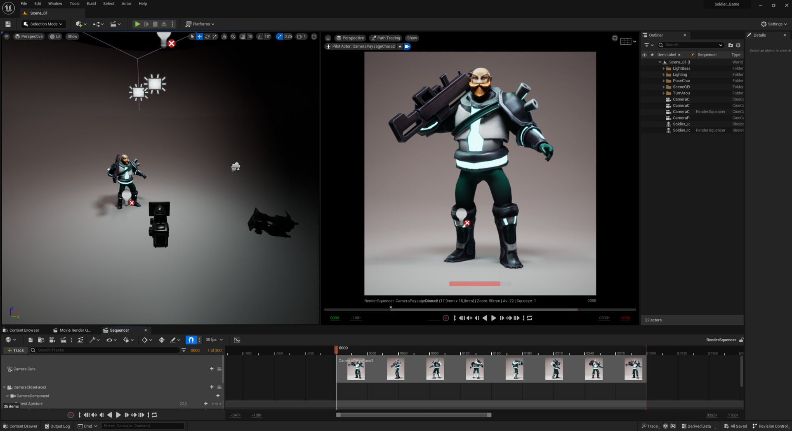

Modeling
The modeling of this character is similar to my Mabo's Monster process. I began with an anatomy study in ZBrush, and for the armor I did a round trip between ZBrush and Maya.

Retopology
After modeling in ZBrush, we aim for a low-poly count for two reasons: efficiency, and visibility from a distance, since the unit is designed for an RTS view and will appear multiple times on screen.

Texturing
The texture work is primarily done with maps, gradients, and a bit of hand-painting for finishing touches. As for the resolution: since the character appears small in an RTS view on a 1920×1080 screen, I chose a 512×512 texture. This applies to each unit in the game, ensuring optimization.

Rig
For the rigging, I aimed for a rig with the fewest bones possible to maximize in-game performance, while retaining the ability to create the desired animations.

Animation
I worked on front and side views, but primarily checked the animation output in-game, specifically in the RTS view. The RTS view in the video is not zoomed in as much as in-game; the real camera is much more distant.
RTS view
Functional In-Game
The unit integrated and functional in the game: selected, ordered around, fighting. The end of the pipeline is a unit that plays, not just a model that renders.
The game: Industrial Warfare (Créajeux).
Final Renders
The finished unit rendered in Unreal Engine, in realtime lit mode, with a path-traced pass for reference. The concept was designed by Alexandre Bédèche.
